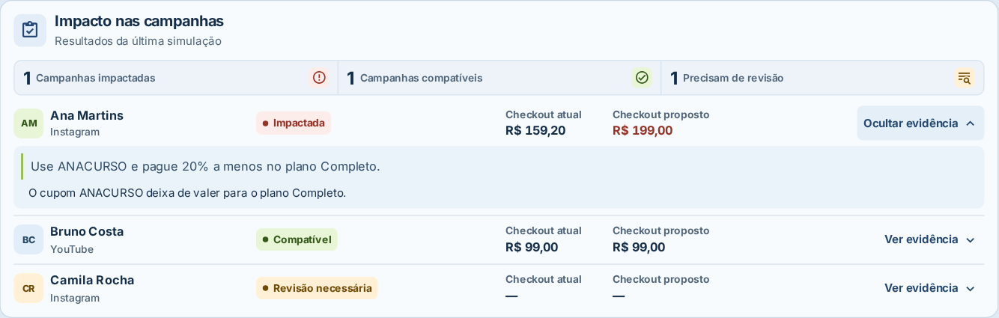

Estudante de Análise e Desenvolvimento de Sistemas
Trabalhei na manutenção de gateways de pagamento e colaborei no chat de IA da haunt.gg. Gosto de investigar o que acontece entre sistemas quando alguém tenta comprar.
“Use ANACURSO e pague 20% a menos no plano Completo.”
Vai restringir o cupom ao plano Básico. Precisa saber quem ainda divulga o desconto para o Completo.
A legenda já publicada continua oferecendo desconto no Completo.
Se a mudança for publicada, quem seguir esse link verá R$ 199,00 onde esperava pagar R$ 159,20.
Na YouShop, o creator divulga um link e pode criar cupons dentro das regras da marca. A legenda fica na rede social. Quem percebe quando a regra muda?
Guia do app Creators · Guia do Link 2YOU
de 1.016 entrevistados nos EUA disseram já ter deixado um carrinho para procurar um cupom.
Pesquisa encomendada pela CouponFollow
Hipótese: o produtor perde tempo localizando divulgações desatualizadas. A frequência e o custo na YouShop ainda precisam ser medidos.
Antes de publicar, o produtor ensaia a mudança. Para cada divulgação cadastrada, o Confere compara o que foi prometido com o que o comprador pagaria.
RASCUNHO
Escolher o desconto e os planos elegíveis para o cupom.
CONFERÊNCIA
Comparar a promessa do creator com o checkout atual e o proposto.
DECISÃO
Abrir o trecho citado e ajustar a oferta ou orientar o creator.

O produtor tem duas saídas: incluir o Completo no cupom ou pedir à Ana que atualize a legenda. Na primeira opção, uma nova simulação confirma os R$ 159,20.
O modelo lê o texto de Ana e extrai o plano Completo, o código ANACURSO e os 20% anunciados. A API exige uma citação que exista na legenda.
O backend Python abre uma sessão MCP, descobre duas ferramentas e faz as chamadas. consultar_oferta devolve as regras. simular_checkout calcula o preço nas versões atual e proposta, na mesma data.
O backend compara a promessa com os dois resultados. Ana aparece como impactada; uma legenda que só promete “condição especial” pede revisão humana.
Ajuda a orientar uma nova campanha. Um texto já aprovado pode ficar desatualizado depois da revisão.
Explica o checkout atual. O produtor ainda precisa identificar quais divulgações serão afetadas pelo rascunho.
Encontra códigos que já expiraram. Aqui, o cupom pode continuar ativo e perder a elegibilidade em apenas um plano.
Referências de mercado · OnBriefing · ClearTerm AI · impact.com
DESENVOLVIMENTO
O modelo leu o número 99 na unidade errada. Ajustei a validação de preços explícitos. Depois dos ajustes, os 12 casos passaram em duas rodadas consecutivas.
RESERVA
Nas seis legendas de reserva, a classificação e os totais coincidiram com o gabarito. A resposta também precisava citar um trecho literal.
Tentativas em que o cupom divulgado falha ÷ tentativas de aplicar esse cupom × 100.
Em campanhas autorizadas, registrar o cupom divulgado, o plano acessado e se o desconto foi aplicado. Contar apenas as tentativas vinculadas à campanha.
Comparar mudanças semelhantes com e sem conferência. Acompanhar também o tempo de revisão e os alertas incorretos.
O protótipo cobre textos cadastrados e regras simuladas. Um vídeo ou story ausente pode conter outra condição.
A demonstração usa dados fictícios. Um piloto exigiria autorização para tratar materiais de creators e delimitar o que chega ao modelo.
Ambiguidade exige revisão. Uma falha de integração deve aparecer como erro. O produtor decide o que alterar.
Experimente com dados fictícios: restrinja o cupom ao Básico e abra a evidência de Ana. Abrir o YouShop Confere ↗